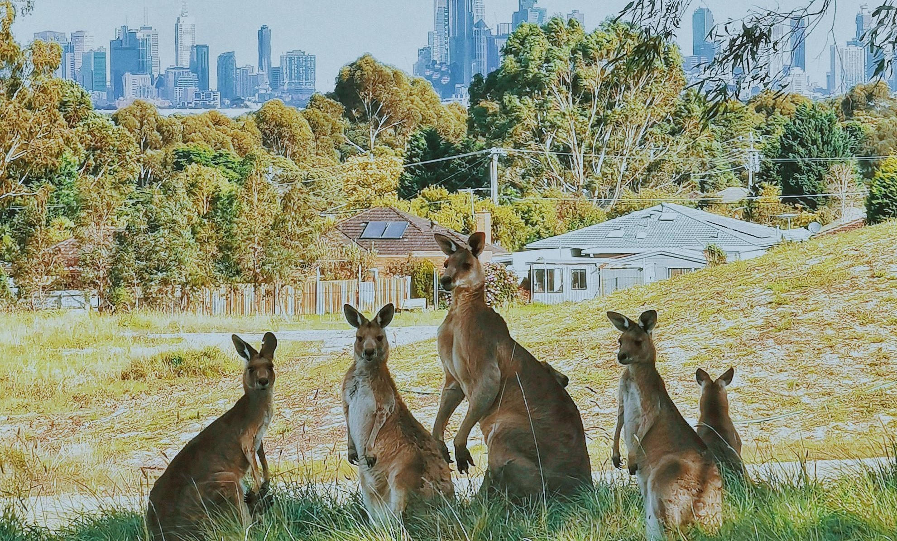

Identity, Values and Strengths Exploration.
 I grew up in the eastern suburbs of Melbourne, to a middle-class white family. I lived near a train station, a Chinese restaurant, and the MCG (Melbourne’s largest sporting complex). I was the middle of five brothers. My mother was an art teacher, and my father an architect. I went to a private all-boys school, was part of the water polo team, and played video games on the weekend. Every Sunday my family went to church. When assembling the evidence for this blog post, I realised that the origins of my core values can be found here, with my family and my upbringing. My parents were kind and creative, which gave me a love of creativity. My faith taught me the importance of integrity and empathy. These came to be defining values in my life.
Excluding my upbringing, there have been two experiences that have shaped me. Both came in two year stints. The first was an opportunity I had to do missionary service in New Caledonia and Vanuatu. This time was many things to me. It was liberating and exhausting. It was confronting and educational. I learnt to speak two new languages. I met countless people and learnt to relate to, and became friends with people who had completely different upbringings to my own. It changed my perspective and reinforced my core beliefs.
The second experience came after. I decided to go to university and become an architect, just like my father. I spent two years studying before I realised some challenging truths, that architecture wasn’t something I enjoyed or wanted to continue. This left me feeling like I had failed. I was disappointed in myself, anxious about the expectations of my parents, and I felt a great sense of hopelessness. However, it also became the catalyst that I needed. It made me reevaluate my life, my core values, and what I wanted for myself and for my future. My wife and I then made the decision to move to New Zealand.
My time in New Zealand has been one of exploring my talents and strengths. Prior to coming I already spoke three languages, English, French and Bislama, and moving in with my wife’s multicultural family presented an opportunity to learn Spanish as a fourth. Languages are a joy to me and I feel energised when learning them.
Soon after arriving, I had the opportunity to build a website for a small company. Working with designs and aesthetics has always been a strength of mine and making the website was an eye opening experience. I found it both easy and logical, and it became one of the things that I'm most proud of. I liked that I had created something that other people could interact with; it gave it a unique sense of purpose.
Technology has always given me a kick. There’s nothing more exciting than the need to buy a new computer or phone. When my last phone broke, I spent literal months researching options before deciding on the particular model that I wanted and waited for it to arrive from overseas. This is one of the reasons why I’m so excited to be a part of the Enspiral Dev Academy. Technology has always been one of my great ‘energisers’ in life.
Throughout this course, I hope to develop my skills further, to engage with people with varying backgrounds and belief systems, and to build upon my foundations of creativity, technology and language. I look forward to meeting everyone and being able to share in something collective.